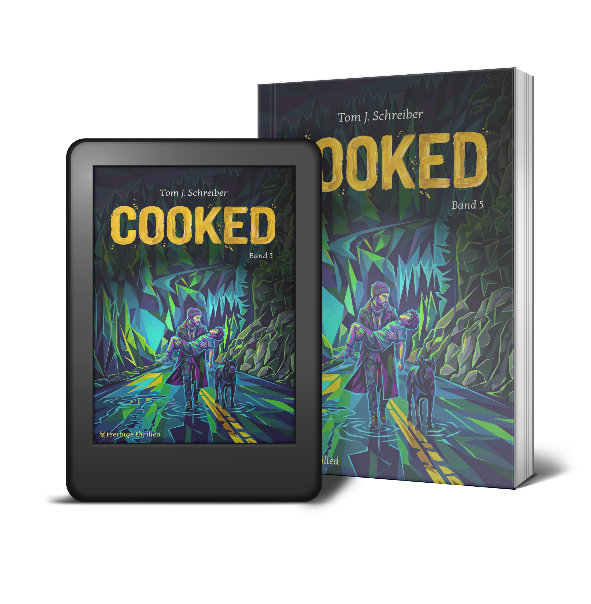
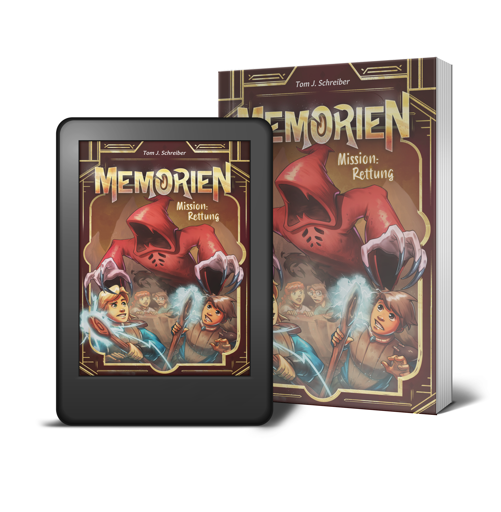
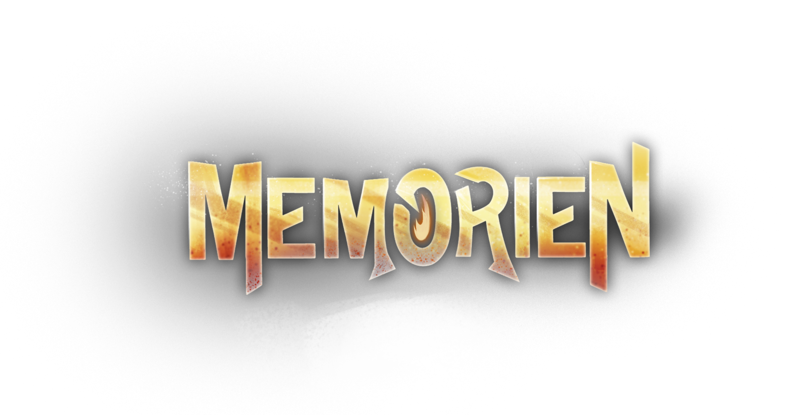
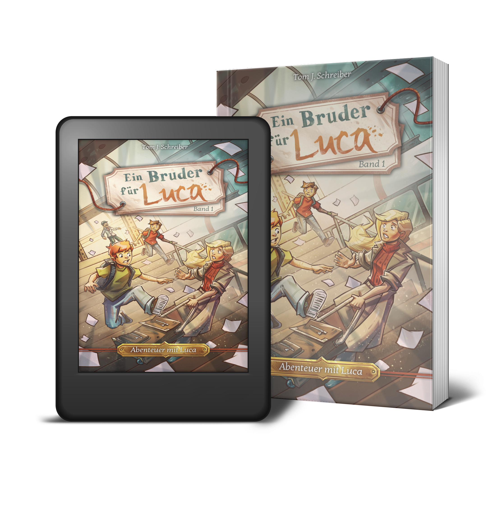

Ein hitzköpfiger Cousin und eine Familie am Abgrund. Die Suche nach der Wahrheit führt zu einem mysteriösen Fremden. Doch der wahre, todbringende Feind versteckt sich mitten unter ihnen.
Mehr erfahren

Flynn will doch nur, dass sein Vater mehr für ihn da ist. Memorien scheint die perfekte Lösung. Doch die Warnungen sind ernst zu nehmen: Wer dort hingeht, kehrt vielleicht nie zurück!
Mehr erfahren
Ein Sommer voller Konflikte und ein Geheimnis, das alles verändert: Jean muss sich seiner Angst stellen, um die Wahrheit zu finden. Wenn ihn doch nur endlich diese toten Augen loslassen würden. Am Ende zählt nur noch eins: der Mut der Verzweiflung.
Mehr erfahren